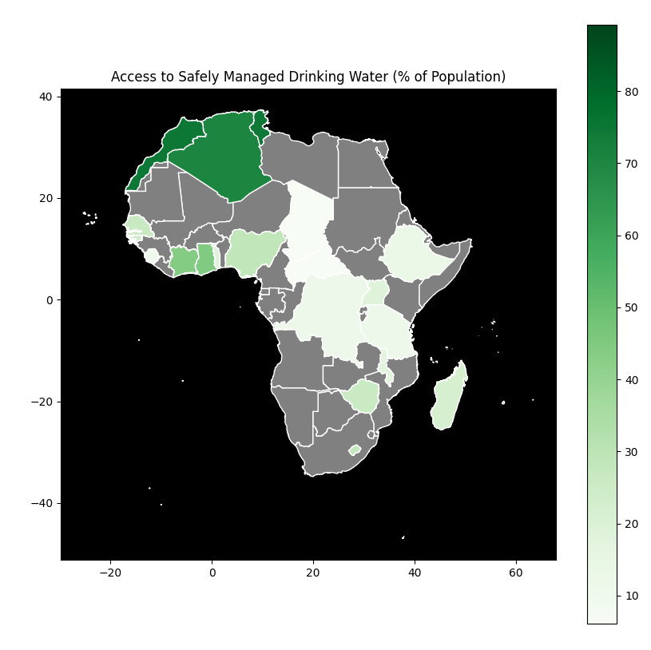
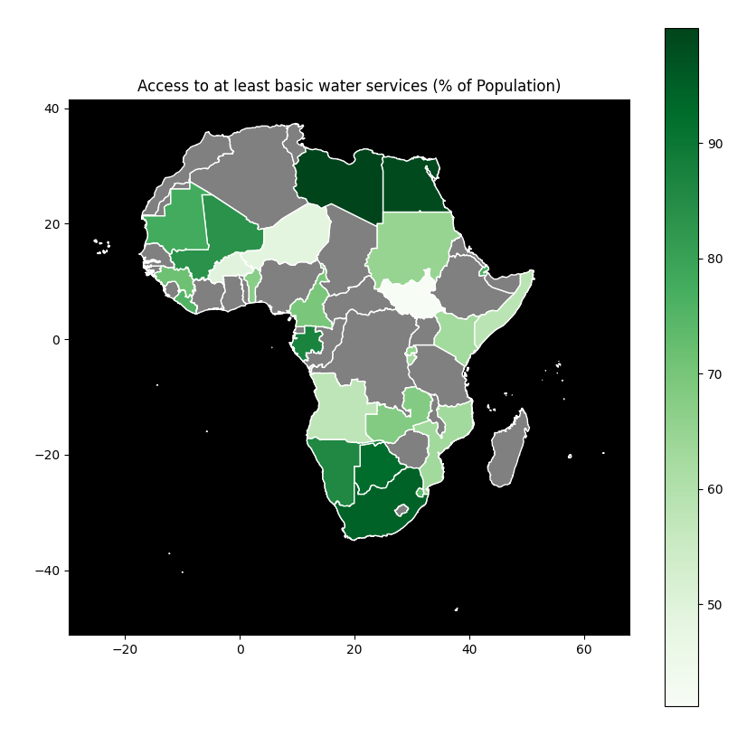
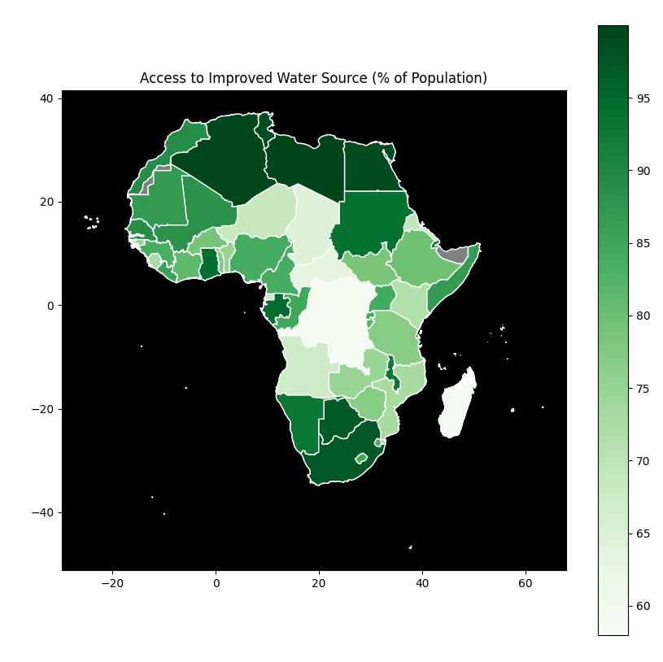
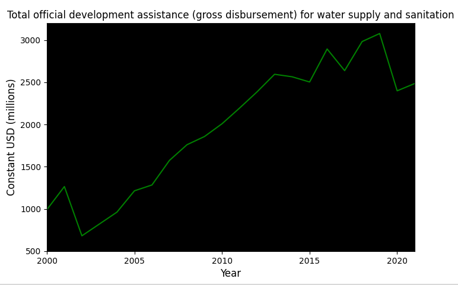
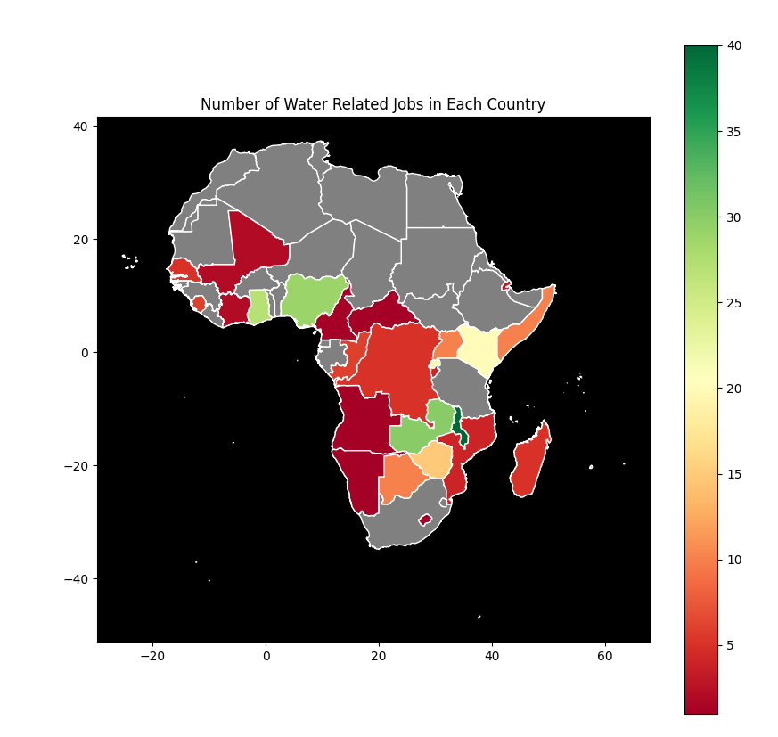

Over the course of this hackathon we have looked at a lot of different datasets related to the level of access to water in the region of Sub-Saharan Africa.
We started with data from the United Nations regarding SDG6. From this data we were able to use python to create several maps. The geographical data for making these maps was taken from the GitHub project geo-countries.
  We also looked at data collected by the OECD regarding development assistance. The values given are adjusted for inflation based on the value of USD in 2017.
Finally we scraped the web for current water related job postings in Sub-Saharan Africa. This gives us a rough idea of how many water jobs might be available in each country as of this weekend. The data was scraped from Josh's Water Jobs. South-Africa had 140 water related jobs, but we opted to omit it from this map as it made the data in other countries harder to read.
